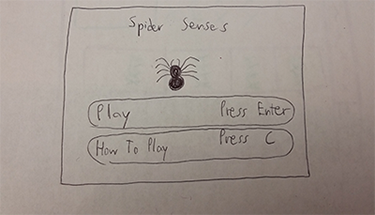

Survive as long as you can by avoiding the falling lethal liquids
It is available only on Desktop/PC
FLASH! A glass container shines, its glistening luminescence has panned across the spider's field of vision. Filled with wonder, the spider crawls toward the container, and climbs inside. Nothing too interesting at first, but the spider would consider this to be a lovely home. BAM! the container is closed shut from the top, the spider desperately tries to escape but it is unfortunately too late. Drip drop from above, the ceiling of the container spews out lethal liquids from the eight pipes. The scientist has captured the spider that he has been trying to kill for so long, and now its finally his chance to kill it. You play as the spider in this game, and your goal is to avoid the lethal liquids for as long as you can to survive, just to frustrate the scientist.
Graphics will be cartoonish, and the sounds in the game will be ambient. The types of sound that the player will be hearing are the music that plays in the background, the effects of what happens to the spider when it touches one of the liquids, the little bits of sound that plays when the user starts and ends the game, and the powerups that the player will get throughout the game.
There will be a separate instructional scene giving a quick overview on how the game works. It will be clearly obvious that the player needs to survive as long they can without getting hit by the lethal liquids.
There is no way of actually beating the game. The goal is to survive the longest amount of time without getting hit by the falling liquids. Some potential powerups include faster movement, mini umbrella that acts as an invincibility powerup that helps protect the spider from the dangerous liquids above. Some strategies I recommend is being aware of the dangers that will fall upon the player, and reacting quickly enough to avoid them. This is because overtime, it will get faster, and more liquids will start to pour from above.
